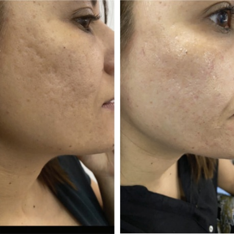
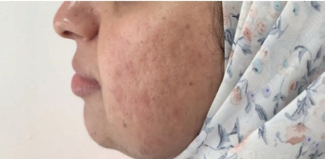
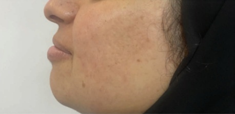
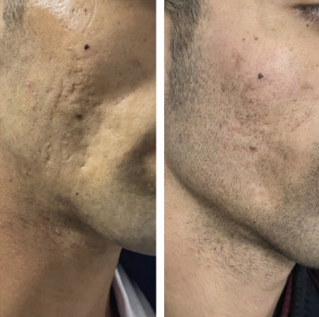
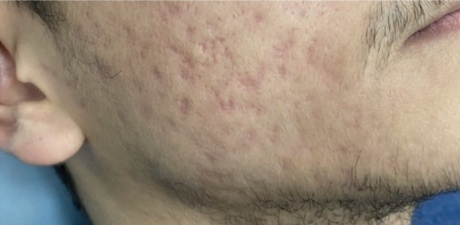
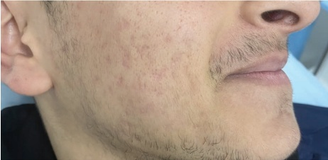
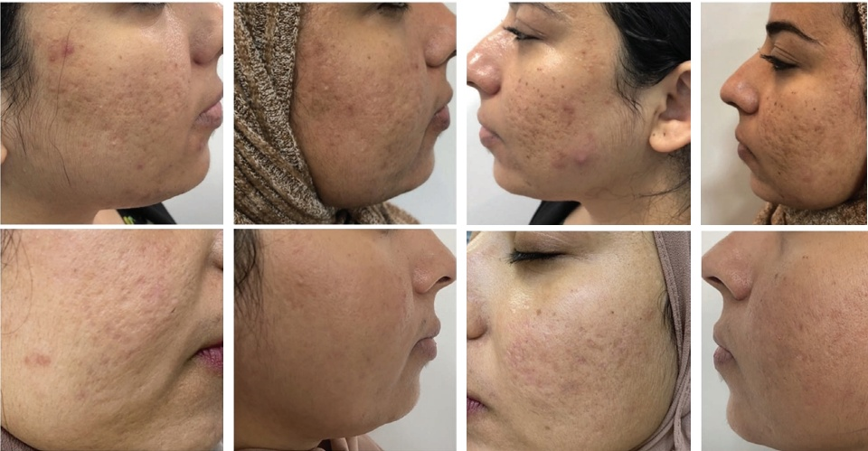

13 面部中三分之一：痤疮疤痕治疗
面部中三分之一区域痤疮疤痕的治疗
13.1 病理生理学和
痤疮疤痕的分类
痤疮是一种复杂且慢性炎症性毛囊皮脂单位疾病，涉及遗传易感性、免疫系统、某些皮肤菌群和环境因素等多种因素 [1]。痤疮的主要后遗症之一是毁容性疤痕，这对自尊心和美容外观都有影响 [2]。萎缩性痤疮疤痕存在一个连续谱，范围从冰点式疤痕到深层、牵拉性的疤痕，这些疤痕会萎缩至皮下组织 [3]。痤疮疤痕的修复需要一种量身定制的方法，需结合适合疤痕类型、患者和皮肤因素以及医生技能的多种工具。然而，通过结合一些简单的步骤，仍有可能采用一个全局/区域性的方法，从而改善任何类型的或深度的痤疮疤痕区域。体积增强是此类区域性方法的一个关键组成部分，而羟基磷灰石钙（CaHA）已被证明是实现这一目的的有效可靠的工具 [4]。本章的目的是强调 CaHA 在管理深层萎缩性痤疮疤痕中可发挥的重要和有效的作用，重点关注在不同类型的痤疮疤痕中结合使用的几种方案。
13.1.1 痤疮疤痕的病理生理学
痤疮疤痕的病理生理学是炎症过程、组织重塑以及身体在痤疮病变后试图愈合的复杂相互作用 [3,5]。痤疮疤痕源于毛囊皮脂单位的破坏，涉及复杂的细胞和分子机制 [5]。
13.1.1.1 炎症级联反应
迈向痤疮疤痕的过程始于由痤疮病变触发的炎症级联反应。粉刺、炎性丘疹、脓疱和结节会诱导免疫应答，激活促炎细胞因子和趋化因子。这种增强的免疫活性会导致组织损伤，尤其是在真皮层 [6]。
13.1.1.2 真皮重塑
在炎症阶段之后，真皮重塑过程成为焦点。胶原蛋白作为提供皮肤紧实度和支撑力的结构蛋白，会发生改变。在痤疮疤痕的背景下，这通常会导致胶原蛋白生成和降解失衡。从正常的胶原结构到异常疤痕组织过渡，涉及胶原类型的变化，表现为不规则胶原纤维的过度产生 [7]。
13.1.1.3 萎缩与增生
不同类型的痤疮疤痕是由于不同的组织反应所致。包括冰点式和盘状（rolling）疤痕在内的萎缩性疤痕，源于胶原蛋白、弹性蛋白和皮下组织的丢失。相反，增生性疤痕是在愈合过程中胶原沉积过多形成的，表现为隆起的疤痕 [3,5,7]。
13.1.1.4 成纤维细胞激活
病理生理学中心在于成纤维细胞的激活，它们是胶原合成的关键参与者。成纤维细胞活性的失调导致了痤疮疤痕中可见的异常胶原组成。此外，成纤维细胞、炎症细胞和细胞外基质成分之间复杂的串扰影响着疤痕形态 [8]。
13.1.1.5 血管改变
血管改变在痤疮疤痕的发病机制中起作用。炎症阶段增加的血流量和血管生成会造成组织损伤。持续的血管变化可能会进一步影响疤痕的外观和质地。了解痤疮疤痕的病理生理学对于制定有针对性的干预措施至关重要。通过揭示这些分子和细胞过程的复杂性，可以使治疗方法能够调节炎症、促进平衡的组织重塑，并最终减轻痤疮对皮肤完整性的长期影响 [9]。
13.1.2 痤疮疤痕的分类
痤疮疤痕表现出多种形式，每种形式都具有不同的特征，并在治疗方面带来了独特的挑战。这些疤痕大致可分为几种类型，为理解其多样的特性提供了一个全面的框架。
13.1.2.1 萎缩性瘢痕（Atrophic Scars）
-
描述：由组织丢失引起的凹陷性瘢痕。
-
病理生理学：涉及胶原蛋白、弹性蛋白和皮下脂肪的耗竭。
外观：包括冰锥样瘢痕（ice-pick）、箱型瘢痕（boxcar）和滚动瘢痕（rolling scars），这些瘢痕共同特征是组织丢失。
了解痤疮瘢痕的类型和分类对于制定有效的治疗策略至关重要。采取一种细致入微的方法，考虑每种瘢痕类型的特定特征，可以确保在复杂的痤疮瘢痕修复过程中达到最佳效果。
- 病理生理学：由局部组织和胶原蛋白丢失引起。
13.1.2.2 冰锥样瘢痕（Ice-Pick Scars）
描述：狭窄、深陷的瘢痕，类似于小的穿刺伤口。
外观：常使皮肤看起来像是被冰锥刺过。
13.1.2.3 箱型瘢痕（Boxcar Scars）
-
描述：边缘清晰的宽大、箱状凹陷。
-
病理生理学：源于胶原蛋白的破坏，形成具有明显边界的凹陷区域。
外观：类似于盒子或矩形形状，影响皮肤质地。
13.1.2.4 滚动瘢痕（Rolling Scars）
描述：宽大、起伏不平的凹陷，边缘呈倾斜状。
- 病理生理学：是表皮与下方的皮下组织牵拉所致。
外观：在皮肤上形成卷曲或波浪状的轮廓 [10]。
13.1.2.5 增生性瘢痕（Hypertrophic Scars）
- 病理生理学：异常的胶原蛋白合成，超出初始损伤范围。
描述：隆起、增厚的瘢痕，延伸至原始伤口部位之外。
- 病理生理学：愈合过程中过度的胶原蛋白生成。
外观：高于周围皮肤，常呈红色或色素沉着 [11]。
• 描述：隆起的、形状不规则的瘢痕，超出原始伤口范围。
13.1.2.6 增生性瘢痕（Keloid Scars）
外观：延伸至原始伤口部位之外，通常具有坚硬和橡皮样的质地 [11]。
13.2 痤疮的治疗策略
根据瘢痕类型分类
痤疮瘢痕表现出多种形式，需要有针对性的治疗方法。下文概述了根据特定瘢痕类型量身定制的策略性干预措施：
13.2.1 萎缩性瘢痕（Atrophic Scars）
包括冰锥样、箱型和滚动瘢痕的萎缩性瘢痕，需要精确的治疗。
激光疗法：分级激光治疗，如分级 CO2 或铒激光，靶向受损皮肤区域，促进胶原重塑和皮肤再活力 [12]。
13.2.1.1 微针（Microneedling）
该微创程序诱导微损伤，触发身体的自然愈合反应并刺激胶原蛋白生成 [13]。
13.2.1.2 真皮层填充剂（Dermal Fillers）
注射型填充剂，如透明质酸或胶原蛋白，可以通过撑起凹陷区域来暂时改善萎缩性瘢痕的外观 [14]。
13.2.2 增生性和瘢痕疙瘩（Hypertrophic and Keloid Scars）
隆起的瘢痕需要特殊的干预措施来减少过度的组织形成。
13.2.2.1 皮质类固醇注射（Corticosteroid Injections）
皮内局部皮质类固醇有助于通过减轻炎症和抑制胶原蛋白合成来使增生性或瘢痕疙瘩平坦化 [15]。
13.2.2.2 手术切除（Surgical Removal）
对于对其他治疗有抵抗性的病例，可考虑切除增生性或瘢痕疙瘩，随后进行细致的伤口闭合和一系列激光疗程以重塑瘢痕。硅酮片或凝胶可预防瘢痕复发 [16]。
13.2.2.3 色素沉着（Hyperpigmentation）
炎症后色素沉着需要有针对性的脱色策略。
13.2.2.4 外用类视黄醇（Topical Retinoids）
视黄醇，如维A酸，促进皮肤细胞周转，有助于淡化色素沉着区域 [15–17]。
13.2.2.5 化学焕肤（Chemical Peels）
化学剥脱剂，如乙醇酸或水杨酸焕肤，有助于去除表层色素和改善整体肤色 [17]。
13.2.3 个体化方案（Individualized Plans）
联合疗法和个体化治疗可达到最佳效果，并且通常源于
羟基磷灰石钙软组织填充剂
定制化、多方面的治疗方法。专家应根据瘢痕类型、皮肤类型和患者偏好来制定治疗方案。
13.2.4 患者教育
强调持续治疗的重要性以及现实的预期，因为改善可能是渐进的。
总之，痤疮瘢痕的综合治疗策略需要对不同类型的瘢痕有细致的理解，并采取个性化、多维度的方案来满足每位患者的独特需求。
13.3 全面提升方案（GLOBAL ENHANCEMENT PROTOCOL）
利用皮下切开和稀释的羟基磷灰石钙（CaHA）
13.3.1 分步技术流程
注意：始终保持无菌状态。
-
麻醉采用使用 1% 利多卡因和肾上腺素（1:100000）的系列圆块阻滞，可选择性地添加意识镇静。
-
通过在瘢痕区域周围绘制局部圆圈来清晰描绘瘢痕范围。
-
使用 22G 锐针刺入一个起始孔洞。最好规划出对瘢痕呈三角形切开的路径。
-
将 22G 钝性套管针通过该孔洞引入，用于松解和破坏任何牵拉性的瘢痕组织。松解深度取决于纤维化的深度。进行多次来回穿刺以确保带状结构得到良好的释放。这也有助于为 CaHA 进行隧道化。最好对瘢痕进行三角化处理，即从三个不同方向进行松解。这可确保更全面的释放。
-
通过用 1% 利多卡因（不含肾上腺素）的 1.5 mL 将 CaHA 稀释至 2:1 的浓度。进行一系列 30 次来回运动，以确保 CaHA 分散均匀。
-
在缓慢拔出套管针的过程中，以每次 0.025 mL 的小分量注射材料。
-
直到覆盖 40 cm2 面积的区域接受了 1.5 mL 的稀释 CaHA [18,19]。
13.4 结合皮下切开、能量设备和稀释 CaHA 的方案
13.4.1 分步技术流程
- 麻醉采用使用 1% 利多卡因和肾上腺素（1:100000）的系列圆块阻滞，可选择性地添加意识镇静。
注意：始终保持无菌状态。
- 通过在瘢痕区域周围绘制局部圆圈来清晰描绘瘢痕范围。

- 使用 22G 锐针刺入一个起始孔洞。最好规划出对瘢痕呈三角形切开的路径。



-
将一根 22G 的钝性套管针穿过孔洞并用于切开和分解瘢痕的牵拉带。切肤深度取决于纤维化的深度。需要进行多次来回划行，以确保充分释放这些带状结构。这也有助于 CaHA 的隧道化（tunneling）。最好对瘢痕进行三角定位，即从三个不同方向进行切肤。这可以确保更全面的释放。
-
此时使用能量设备。如果采用激光或射频微针等模式，最好在注射 CaHA 之前进行。
-
通过用 1.5 mL 不含肾上腺素的 1% 利多卡因稀释 CaHA，可制备出 2:1 的 CaHA 稀释液。进行一系列 30 次来回运动，以确保 CaHA 分散均匀。
-
在缓慢拔出套管针的过程中，分小剂量（每次 0.025 mL）注射该材料。
-
直到覆盖面积为 40 cm² 的区域接受了 1.5 mL 的稀释 CaHA。
13.5 利用 TCA CROSS/酚交叉、切肤、能量设备和 CaHA 的联合方案（图 13.4–13.5）
13.5.1 分步技术流程
注意：始终保持无菌状态。
-
标记冰点瘢痕，并使用小画笔或牙签将 80% TCA 配方分别植入每个瘢痕中。
-
80% 的 TCA 配方可以通过混合 0.8 mL 的 100% TCA 溶液和 0.2 mL 的无菌蒸馏水获得。
-
在涂抹 TCA 溶液时，确保通过在溶液容器壁上轻轻运行画笔来清除多余的 TCA。
-
TCA 配方应置于瘢痕边界内部，避免溢出。
-
需要观察的临床终点是瘢痕范围内出现明显的白/灰色。
-
在完成目标性 TCA CROSS 治疗瘢痕后，进行麻醉和切肤，方法如前所述 [20,21]。
-
随后注射稀释的 CaHA，方法如前所述。
13.6 优化切肤技术的要点
切肤是痤疮瘢痕修复中的一项重要操作，涉及插入钝性、半钝性或锐性器械，以分解真皮和下方肌肉筋膜之间的瘢痕形成物。
瘢痕组织的程度因人而异，通常出现在痤疮瘢痕处，几乎所有病例都表现出一定程度的牵拉带。精确界定区域并确定切肤工具的进入手点至关重要。必须小心避免韧带起源，以预防潜在的脱垂 [22]。评估瘢痕组织的深度是必要的，并且使用吸肿剂（tumescent）对于神经保护、减轻瘀血、皮下出血和血肿非常关键 [23]。
在使用钝性器械如套管针（范围为 16–22G）时，需要在不同层次进行多次划行才能使瘢痕组织得到适当释放。用切肤工具对瘢痕进行交叉网格状和三角定位的处理是



重要的是。对于像 Taylor 释放器或吸脂 V-分离器这类半钝性器械，需要轻柔的推拉动作以防止深层损伤。涉及 18G 皮下针或角膜刀的锐性切开术，保留用于有明显牵拉的特定区域 [23,24]。
切开术后，缓冲组织对于防止瘢痕组织重建至关重要。CaHA 是首选的选择，尽管有些研究使用填充剂或生理盐水注射 [25]。恢复期通常为七到十天，可能出现水肿和结膜充血。建议患者在最初的 24 小时内敷冷敷，随后进行温敷。可使用常规止痛药物。根据痤疮瘢痕的严重程度，可能需要接受一至六次间隔六到八周的切开术治疗，预期效果是渐进但持续的。
在注射稀释的 CaHA之前进行有效的切开术对于防止非瘢痕组织抬升超过瘢痕组织至关重要，以避免瘢痕处或更深层次出现不平整的外观。适当的释放能确保更平滑的结果。
13.7 关于 CaHA 稀释的论述
稀释的 CaHA 可以刺激瘢痕区域和皮肤凹陷处的胶原蛋白生成。可行的稀释范围包括 1:1、1:2 和 1:3。通常，对于较薄的皮肤，采用 1:2 或 1:3 的稀释液比较合适，而对于较厚的皮肤则使用 1:1 的稀释液。当以小微团注而非线性丝状物的方式进行复位注射时，结节形成的几率较低。
13.8 关于 CaHA 作为药物递送的论述
CaHA 作为一种药物递送方式是有效的。在应用了 CO2 激光后，可以局部给药稀释的 CaHA。Wang 等人证明，二氧化碳激光治疗后，微通道可保持开放约 24 小时，从而能够有效地将稀释的 CaHA输送到这些通道中 [26]。这为痤疮瘢痕的治疗提供了一种替代方法。
参考文献
[1] P. Ghasemiyeh et al., “The role of different factors in pathophysiology of acne and potential therapeutic options: A brief review,” Trends Pharmacol Sci, vol. 8, no. 2, pp. 107–118, 2022.
[2] K. Chilicka et al., “Methods for the improvement of acne scars used in dermatology and cosmetology: A review,” J Clin Med, vol. 11, no. 10, 2022.
[3] D. A. Agrawal, N. Khunger, “A morphological study of acne scarring and its relationship between severity and treatment of active acne,” J Cutan Aesthet Surg, vol. 13, no. 3, pp. 210–216, 2020.
[4] A. Antonino, A. Francesco, “Prospective and randomized comparative study of calcium hydroxylapatite vs calcium hydroxylapatite
plus HIFU in treatment of moderate-to-severe acne scars," J Cosmet Dermatol, vol. 20, no. 1, pp. 53–61, 2021.
[5] T. Jennings et al., “Acne scarring-pathophysiology, diagnosis, prevention and education: Part I,” J Am Acad Dermatol, vol. 90, no. 6, pp. 1123–1134, 2024.
[6] Y. ElAttar et al., “Study of interleukin-1 beta expression in acne vulgaris and acne scars,” J Cosmet Dermatol, vol. 21, no. 10, pp. 4864–4870, 2022.
[7] M. R. Roh, K. Y. Chung, “Acne scars: How they form and how to undo them,” in: Ogawa, R., ed., Total Scar Management: From Lasers to Surgery for Scars, Keloids, and Scar Contractures. Springer, 2019, pp. 97–103.
[8] B. Chancheewa et al., “Myofibroblasts, B cells, and mast cells in different types of long-standing acne scars,” Skin Appendage Disord, vol. 8, no. 6, pp. 469–475, 2022.
[9] D. M. K. El-Sayed et al., “Brief overview about updated management lines of post acne erythema: Review article,” Egypt J Hosp Med, vol. 91, no. 1, pp. 4294–4297, 2023.
[10] M. Boen, C. Jacob, "A review and update of treatment options using the acne scar classification system," Dermatol Surg, vol. 45, no. 3, pp. 411–422, 2019.
[11] G. Fabbrocini et al., “Acne scars: Pathogenesis, classification and treatment,” Dermatol Res Pract, vol. 2010, no. 1, 2010.
[12] B. E. Cohen et al., “Acne scarring: A review of available therapeutic lasers,” Lasers Surg Med, vol. 48, no. 2, pp. 95–115, 2016.
[13] N. Mujahid et al., “Microneedling as a treatment for acne scarring: A systematic review,” Dermatol Surg, vol. 46, no. 1, pp. 86–92, 2020.
[14] E. Forbat et al., “The role of fillers in the management of acne scars,” Clin Exp Dermatol, vol. 42, no. 4, pp. 374–380, 2017.
[15] M. Jalali, A. Bayat, “Current use of steroids in management of abnormal raised skin scars,” Surgeon, vol. 5, no. 3, pp. 175–180, 2007.
[16] P. Durani, A. Bayat, “Levels of evidence for the treatment of keloid disease,” J Plast Reconstr Aesthet Surg, vol. 61, no. 1, pp. 4–17, 2008.
[17] A. Jackson, “Chemical peels,” Facial Plast Surg, vol. 30, no. 1, pp. 26–34, 2014.
[18] J.A.J. van Loghem et al., “Calcium hydroxylapatite: Over a decade of clinical experience,” J Clin Aesthet Dermatol, vol. 8, no. 1, pp. 38–49, 2015.
[19] A. T. De Almeida et al., “Consensus recommendations for the use of hyperdiluted calcium hydroxyapatite (Radiesse) as a face and body biostimulatory agent,” Plast Reconstr Surg Glob Open, vol. 7, no. 3, 2019.
[20] J. B. Lee et al., “Focal treatment of acne scars with trichloroacetic acid: Chemical reconstruction of skin scars method,” Dermatol Surg, vol. 28, no. 11, pp. 1017–1021, 2002.
[21] M. Dalpizzol et al., “Comparative study of the use of trichloroacetic acid and phenolic acid in the treatment of atrophic-type acne scars,” Dermatol Surg, vol. 42, no. 3, pp. 377–383, 2016.
[22] F. Araghi et al., “The importance of facial retaining ligaments’ preservation during the subcision,” Aesthet Surg J, vol. 42, no. 1, pp. NP87–NP88, 2022.
[23] S. Dadkhahfar et al., “Subcision: Indications, adverse reactions, and pearls,” J Cosmet Dermatol, vol. 19, no. 5, pp. 1029–1038, 2020.
[24] M. B. Taylor et al., “Single session treatment of rolling acne scars using tumescent anesthesia, 20% trichloracetic acid extensive subcision, and fractional CO₂ laser,” Dermatol Surg, vol. 43, no. Suppl 1, pp. S70–S74, 2017.
[25] K. Balighi et al., “Subcision in acne scar with and without subdermal implant: A clinical trial,” J Eur Acad Dermatol Venereol, vol. 22, no. 6, pp. 707–711, 2008.
[26] J. V. Wang et al., “Evaluation of device-based cutaneous channels using optical coherence tomography: Impact for topical drug delivery,” Dermatol Surg, vol. 48, no. 1, pp. 120–125, 2022.